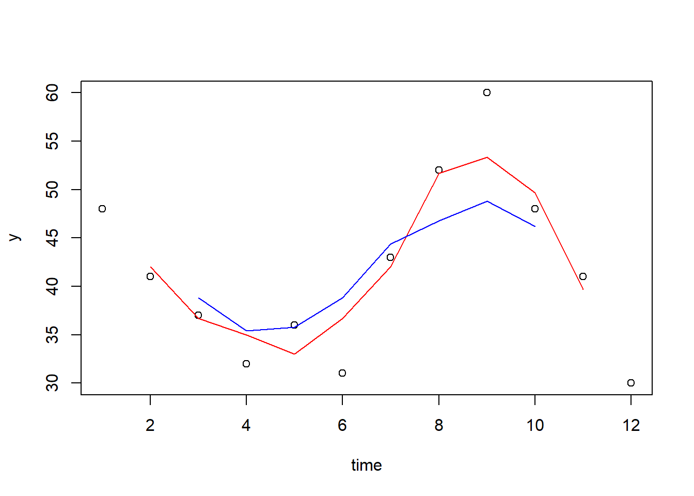

6.6 MA(q)
6.6.1 Kontrollspørsmål/Diskusjonsspørsmål
- Hva er definisjonen på en MA(1)- og en MA(\(q\))-modell?
- Hvordan skiller definisjonen av en MA-prosess seg fra definisjonen av en AR-prosess?
- På hvilken måte er autokorrelasjonsfunksjonene til AR- og MA-prosesser forskjellige?
- Kan du, med egne ord, beskrive en type reelle fenomener som kan modelleres som en MA-prosess?
6.6.2 R-øving
1. Estimering og predikering. På samme måte som for AR-prosessen kan vi nå simulere og estimere en MA(1)-prosess med \(\theta = 0.95\):
library(forecast) # Trengs for estimering
n <- 100 # Antall observasjoner
ma1 <- arima.sim(model = list(ma = 0.95), n) # Simuler tidsrekken
plot(ma1, type = "b") # Lag et plott
Arima(ma1, order = c(0,0,1)) # Estimer thetaStemmer estimatet overens med den sanne \(\theta\)? Sjekk ut dokumentasjonen ?Arima og se hva du må gjøre for å spesifisere at modellen ikke har noe konstantledd \(c\). Prøv også å modifisere koden fra AR-oppgavene slik at du predikerer den simulerte MA(1)-tidsrekken 10 steg frem.
2. Analyse av global temperatur. La oss når ta for oss eksempelet fra videoen der vi ser på den globale månendlige gjennomsnittstemperaturen fra 1880 til 2016. Last ned temp.csv, som er en CSV-fil med datasettet. Se på de første par radene:
temp <- read.csv("temp.csv")
head(temp)## Date Mean
## 1 1880-01-06 0.0009
## 2 1880-02-06 -0.1229
## 3 1880-03-06 -0.1357
## 4 1880-04-06 -0.0499
## 5 1880-05-06 -0.0738
## 6 1880-06-06 -0.1692Første kolonne inneholder informasjon om tidspunkt, og temperaturen er inneholdt i andre kolonne. La oss plotte både temperaturrekken og den differensierte temperaturrekken (dvs. forskjellen fra dag til dag). Hvis vi avslører at den differensierte tidsrekken kan regnes ut ved å kjøre difftemp <- diff(temp$Mean), skulle det nå være grei skuring å produsere følgende to enkle plott:
difftemp <- diff(temp$Mean)
plot(temp$Mean, type = "l")
plot(difftemp, type = "l")Lag videre autokorrelasjonsplottet som vist i videoen for den differensierte tidsrekken:

I autokorrelasjonsplottet ser vi nettopp et slikt MA-mønster som vi så i videoen; nemlig at autokorrelasjonen plutselig blir null (eller omtrent null) for et gitt lag. I dette tilfellet har vi at første ordens autokorrelasjon er klart forskjellig fra null, men at den fra og med \(k = 2\) nesten ikke har utslag.
Hvis de differensierte temperaturmålingene faktisk er MA(1), kan den skrives slik:
\[Y_t = c + \theta u_{t-1} + u_t,\]
der \(\theta\) er en ukjent parameter. Vi kan bruke datasettet vårt til å estimere \(\theta\) ved å bruke Arima()-funksjenen på samme måte som da vi estimerte en AR(1)-modell. Den eneste forandringen vi må gjøre er å endre order-argumentet fra c(1, 0, 0) til c(0, 0, 1):
Arima(difftemp, order = c(0, 0, 1))## Series: difftemp
## ARIMA(0,0,1) with non-zero mean
##
## Coefficients:
## ma1 mean
## -0.4988 0.0005
## s.e. 0.0251 0.0012
##
## sigma^2 estimated as 0.009078: log likelihood=1532.11
## AIC=-3058.23 AICc=-3058.21 BIC=-3042.01Hvis du har tid til slutt og vil ha litt ekstra trening kan du prøve deg på følgende oppgave:
- Prediker den differensierte temperaturrekken tre måneder frem i tid.
- Lag en figur der du plotter de 12 siste månedene i den observerte tidsrekken sammen med prediksjonene dine med prediksjonsintervaller.
- Bonuspoeng: Husk at vi nå har predikert forandringen i den globale gjennomsnittstemperaturen fra måned til måned. Kan du heller lage en figur med selve temperaturserien og bruke prediksjonene dine til å heller plotte inn de tilhørende predikerte temperaturene?
- Pynt så figuren slik at du kan sende den fra deg.